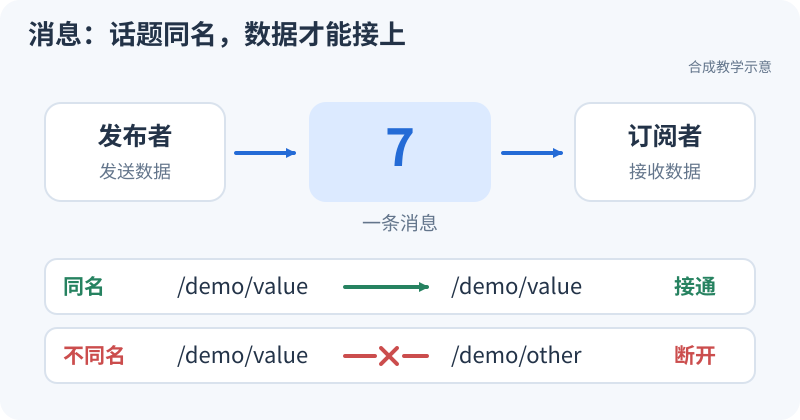
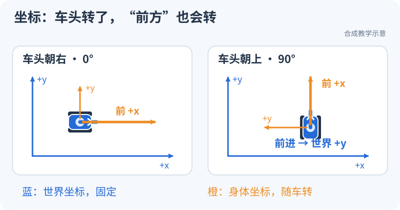
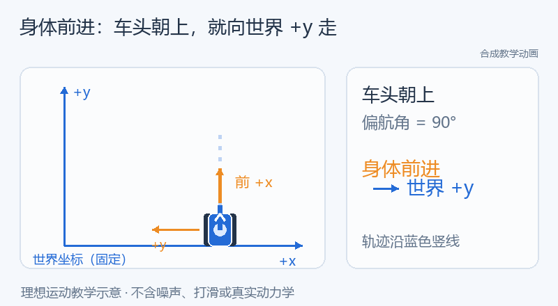

消息怎么传到节点，车头转了又往哪走？（S1–S2）
整理与维护：24cst朱鑫鹏
先看消息怎么传：两个节点先约好同一个 Topic 名，再看数字能不能从左边送到右边。

现在试一下：接通，再接错（5分钟）
- 保持“名字相同”，点“开始”。看发送数和接收数一起增长。
- 改成“名字不同”。只观察两个计数：哪边还在加，哪边停在 0？
- 改回“名字相同”。看接收是否恢复，用一句话写下刚才改了哪条通信地址。
预期：发送节点可以一直工作，接收节点却可能什么也收不到；先查两端是否接在同名 Topic，再查后面的类型和 QoS。
再看车头：转了90°，“向前”还是同一个方向吗？
先看车体轴和世界轴：蓝色世界轴固定在地上，橙色车体轴跟着车头转。


现在试一下（3分钟）：选“车头 0°”和“向前”，点“开始”；再选“车头 90°”和“向前”，重新开始；最后选“向左侧移”，比较轨迹。
预期：车头朝世界 +y 时，车体 +x 的“向前”会沿世界 +y 移动。body 指随车转的身体方向，world 指固定的世界方向；速度属于哪一套坐标，必须先说清。
看懂了再往下读：先展开第1节把演示接线换成自己的 ROS 节点；第2、3节再解释 TF 和速度公式，第4节处理时间与回放。页面演示只做教学，不连接真实底盘。
真正运行ROS节点前，要准备什么？
原课程：S1–S2：ROS2、TF、时间与全向运动。
前置：最小环境已通过。目标是写小节点、看懂通信关系，并用实验区分通信、坐标和时间问题。先在独立开发机完成；本页的教学 Topic 不接真实底盘。
1. 第一个自己的节点
1.1 把通信想成两个人按约定传数字
publisher（发布者）每0.1秒发送一个序号，subscriber（订阅者）收到后打印。这两个程序不必互相调用函数，但必须约定通道名和数据格式。package 是可构建/安装的代码单位，workspace 是组织这些包的工作目录，node 是运行中的通信参与者；一个进程也可以装多个节点，所以“开了几个进程”和“有几个节点”不能混为一谈。
例如 rate_hz=10 表示每秒10次，定时器间隔是 1/10=0.1 s。队列深度20表示最多保留一定数量的待处理数据，不能读成20 Hz。若实际接收日志是 0,1,2,4，它提示有一帧未被观察到，但可能来自发布、传输、处理或日志节流，先查端点和计数，不直接判驱动丢包。
知识库已经有可读的教学实现：路径 training/ros2_ws/src/nav_training/nav_training/sequence.py 的SequencePublisher L10–25和SequenceSubscriber L28–39。沿以下四步读，不必先理解所有 Python 语法：
- 第12行给节点起名并放进
/nav_training；第13–15行读启动参数。 - 第16行声明发送
Int64，第18行约定每隔1/rate调用publish_next。 - 第22–23行先发送当前序号，再加1；消息格式和频率在不同位置决定。
- 第34行把订阅与
receive回调连接；第38行转发收到的消息，第39行的日志有1秒节流，日志行数因此不等于接收消息数。
先运行并画出这套示例的接线，再按T1要求写自己的节点。现有示例的名字是 sequence_source/sequence_sink，下面自写C++练习用 training_publisher/training_subscriber，查询时应使用实际名字。
T1 在 nav_training_ws 添加 publisher/subscriber：发布带递增序号的数据，订阅端输出序号、接收时间和计数。再把发布频率设为参数，用 Python launch 同时启动节点、设置 namespace 和 remap。
从空包到可运行代码，按顺序做三个官方 Humble 章节：C++ pub/sub → C++ 参数 → launch 入门。章节中的包名可以保留在另一个练习包里；迁移到 nav_training 时要一致修改 CMake、依赖与运行名。
在 src/training_publisher.cpp、src/training_subscriber.cpp 完成自己的节点后，CMakeLists.txt 在 ament_package() 之前至少需要以下目标和安装规则；这段只负责构建和安装，不会自动生成节点源码：
add_executable(training_publisher src/training_publisher.cpp)
ament_target_dependencies(training_publisher rclcpp std_msgs)
add_executable(training_subscriber src/training_subscriber.cpp)
ament_target_dependencies(training_subscriber rclcpp std_msgs)
install(TARGETS training_publisher training_subscriber
DESTINATION lib/${PROJECT_NAME})
# 创建 launch 目录并保存 training.launch.py 后再加入这一行
install(DIRECTORY launch DESTINATION share/${PROJECT_NAME})
重新 colcon build --symlink-install --packages-select nav_training，source 后分别用 ros2 run nav_training training_publisher、ros2 run nav_training training_subscriber 验证，再用 ros2 launch nav_training training.launch.py 验证一起启动。节点名和 Topic 在源码/launch 中设为下例所用名称，或用查询结果替换。T1 先用启动参数设置频率，动态改频率是扩展项，不能以参数值改变就认为定时器周期自动改变。
必学：workspace/package/node、消息类型、Topic、参数、Service、Action、QoS、日志和 launch。Service 适合短请求，Action 适合有持续反馈、可取消的长任务；导航 Goal 的“已接受”不等于“已到达”。
具体地说，连续雷达数据用 Topic；一次查询地图用 Service；“去到2米外，再告诉我走了多远、是否完成、能否取消”用 Action。参数是节点的设置，如发布频率；launch 负责把设置与节点启动组织起来。QoS 是通信双方对可靠性、历史保存等行为的约定，不是给消息换一个名字。Best Effort 发布者不能满足 Reliable 订阅者要求，两个端点即使同名同类型也可能收不到数据。
# 在两个教学节点已运行的终端旁执行
ros2 node list
ros2 node info /training_publisher
ros2 topic list -t
ros2 topic info /training_data --verbose
ros2 topic echo /training_data --once
ros2 topic hz /training_data
ros2 param list /training_publisher
ros2 action list -t
名称由自己的代码决定，若不一致先用 list 查询，不照抄改生产配置。故障练习：将订阅 Topic 改错一次，再构造 Best Effort 发布/Reliable 订阅不兼容一次；先保留现象、端点与 QoS 证据再修。hz 是观察端收到的数据速率，受 QoS 和工具负载影响，不能直接当作驱动真实采样率。
真实代码从 loam_interface 开始读：找构造函数、declare/get_parameter、create_subscription、回调、create_publisher。先不推导滤波公式。
这条阅读路线的真实路径是 ros_ws/src/pb2025_sentry_nav/loam_interface/src/loam_interface.cpp：LoamInterfaceNode L23–51里，declare_parameter 给出接口/默认值，get_parameter 取当前值；第43–44行固定输出名，第46–51行从参数读取输入名并绑定回调。把它抄成“输入名从哪来→哪种消息→哪个回调→哪个输出”，就完成了第一遍源码阅读。
Action 练习先按自定义 Action建立 action_tutorials_interfaces/Fibonacci.action，再跟随 Humble C++ Action 教程编译服务端/客户端。GitHub 原文的 literalinclude 指向源码，可直接查看 client.cpp 和 server.cpp。
官方客户端通常只发目标，T1 需要额外实现取消：在 goal_response 回调保存非空 goal_handle，在第一次或第二次 feedback 回调中用布尔标记保证只请求一次 client_ptr_->async_cancel_goal(goal_handle)；不要在回调里阻塞等待。记录取消响应，并在 result 回调检查 rclcpp_action::ResultCode::CANCELED。服务端需要接受取消，并在执行循环中检查 is_canceling() 后调用 canceled(result)。选择足够长的 Fibonacci 任务避免取消前已完成。提交自己的改动与实际状态，不能只关闭客户端充当取消。
Action 至少有三个时刻：服务端接受任务、过程中收到反馈、最后收到结果。取消响应说“服务端同意处理取消”，最终 CANCELED 才说明任务以取消结束。知识库路径 training/ros2_ws/src/nav_training/nav_training/fibonacci_client.py 的run L38–65给了现成 Python 阅读对照：第42行发目标，第44行检查是否接受，第47行取得结果 future，第54–55行发取消并检查响应，第57–65行等待并检查最终状态。它计算数列而不控制机器人，适合先把任务契约学明白。
2. TF 与命名空间
坐标变换采用 p_A = T_A_B · p_B：T_A_B 把 B 中的坐标转换到 A。理解平移、旋转、齐次变换和四元数归一化；不需要先学李群推导。米、秒、弧度与右手系见 REP-103。
2.1 同一个点，为什么会有两组坐标
你站在教室门口，用教室方向描述桌子位置；机器人用自身前方描述同一张桌子。桌子没动，参考系换了，数字就会变。二维写法是 p_A=R(yaw)·p_B+t：先把方向旋转到A，再加B原点在A中的位置。右手约定中x向前、y向左、z向上，正yaw从上往下看是逆时针。
设雷达原点在底盘中为 (0.2,0)，雷达相对底盘转90°；雷达测到一个点 (1,0)。旋转后是 (0,1)，再加安装平移得到底盘坐标 (0.2,1)。下方静态TF练习设 yaw=0，同一个雷达点则变成 (1.2,0)，z还要加0.3。给点换 frame_id 不会做这些运算。本节0.2/0.3是教学假设，实车安装值要读模型。
四元数是表达三维旋转的一种格式，不是把roll/pitch/yaw直接填到x/y/z。仅绕z转90°时，(x,y,z,w)=(0,0,sin(45°),cos(45°))≈(0,0,0.7071,0.7071)；零旋转是 (0,0,0,1)，四个分量全零不合法。组合变换也有顺序：T_odom_base=T_odom_lidar·T_lidar_base，不能交换两项。
把“外参只差一点”变成可计算的问题：距离雷达 1 m 的点，若 yaw 多填 5°，方向误差约为 8.7 cm；同方向更远的点偏差更大。下面是固定合成输入的几何对照，先预测向哪侧偏，再按对照实验复算和恢复。它不代表实车标定精度。

真实对应位置是主仓库路径 ros_ws/src/pb2025_sentry_nav/sensor_scan_generation/src/sensor_scan_generation.cpp 的laserCloudAndOdometryHandler L62–85：第71行读里程计位姿，第72–73行查安装关系，第75–76行按顺序相乘，第78–81行分别发布TF和Odometry，第84行用逆变换把点云转回雷达坐标。先在纸上标注每个矩阵的“源→目标”，再对照变量名，避免凭名字猜方向。
用教学帧 training_base、training_lidar 做静态实验，避免和实车帧重名：
ros2 run tf2_ros static_transform_publisher --x 0.2 --y 0.0 --z 0.3 \
--roll 0 --pitch 0 --yaw 0 \
--frame-id training_base --child-frame-id training_lidar
另一个终端运行 ros2 run tf2_ros tf2_echo training_base training_lidar，应看到设定平移和单位旋转。RViz Fixed Frame 设 training_base，添加 TF，解释为什么雷达原点在该位置。不要把所有传感器机械地串成一条链；本队树见系统地图。
本队 bringup 将 TF topic 放入机器人 namespace，但 frame ID 保留 map/odom 等。只读检查示例（节点已启动且使用默认 namespace）：
export ROBOT_NS=/red_standard_robot1
ros2 run tf2_ros tf2_echo map base_footprint --ros-args \
-r /tf:=$ROBOT_NS/tf -r /tf_static:=$ROBOT_NS/tf_static
ros2 run tf2_tools view_frames --ros-args \
-r /tf:=$ROBOT_NS/tf -r /tf_static:=$ROBOT_NS/tf_static
ros2 topic info "$ROBOT_NS/tf" --verbose
ros2 topic info "$ROBOT_NS/tf_static" --verbose
工具参数以本机 --help 为准。若回放，工具也需要适配回放时间；不要同时混入另一台机器同名帧。报告每条边的发布者、静态/动态、时间源和所属模式；一个 child 在同一树里不能有两个父亲。
2.2 namespace 管通信名字，frame ID 管空间名字
相对 Topic sequence 在 /nav_training 下解析为 /nav_training/sequence；绝对 Topic /sequence 保持原名。可以把namespace理解为通信地址的文件夹，但TF消息里的 training_base 是消息内容，不会自动改成 /nav_training/training_base。
知识库路径 training/ros2_ws/src/nav_training/launch/bad_topic.launch.py 的故障入口把订阅名设为 /sequence；实际接线由路径 training/ros2_ws/src/nav_training/nav_training/presets.py 的description L10–29生成。发布者仍发相对 sequence，所以一端在 /nav_training/sequence，另一端在 /sequence。这两个地址都能出现在列表里，却没有同一条数据流。查 topic info --verbose 后再用 sink_topic:=sequence 复测，把“故障前、根因、修复后”各保存一次。
对应主系统要读路径 ros_ws/src/pb2025_sentry_nav/pb2025_nav_bringup/launch/bringup_launch.py 的命名空间/TF remap L140–197。查TF工具若仍订阅根 /tf，即使机器人TF在 /red_standard_robot1/tf 正常发布，工具也会像“什么都没发生”。
3. 理想全向运动模型
T2 自写教学节点：输入 /training/cmd_vel（Twist），输出 /training/odom（Odometry）和 training_odom→training_base TF；用实际 dt 积分。
创建独立运动包可用 ros2 pkg create --build-type ament_cmake nav_training_motion --dependencies rclcpp geometry_msgs nav_msgs tf2 tf2_ros。若沿用旧包，将这些依赖加入 package.xml、CMake 的 find_package 和 ament_target_dependencies；消息与 TF 发布方式参考Humble C++ tf2 广播器。
xdot = cos(yaw) * vx - sin(yaw) * vy
ydot = sin(yaw) * vx + cos(yaw) * vy
yawdot = wz
x += xdot * dt; y += ydot * dt; yaw += wz * dt
逐行理解：第一、二行将车体速度旋转到世界方向；第三行给角速度关系；最后一行才乘上秒数累积位置和角度。以下是只用于手算的理想例子，初始位置都为0，忽略加速过程：
| 初始yaw与输入 | 持续时间 | 预期变化 |
|---|---|---|
| yaw=0，vx=0.2、vy=0、wz=0 | 1 s | x增加0.2 m |
| yaw=0，vx=0、vy=0.2、wz=0 | 1 s | y增加0.2 m，车向左侧移 |
| yaw=π/2，vx=0.2、vy=0、wz=0 | 1 s | x约不变，y增加0.2 m，仍是沿车头前进 |
| vx=vy=0，wz=π/2 | 1 s | 只转90°，位置不变 |
组合运动时yaw不断变化，不能把第一帧的方向固定用整整1秒。知识库路径 training/ros2_ws/src/nav_training/nav_training/core.py 的integrate_body L29–47采用恒定车体Twist的圆弧精确积分：第34行求本步转角，第38–42行处理半步方向和圆弧缩放，第43–45行更新位置和yaw。它与上面的Euler教学式目的相同，实现更适合组合运动；读代码时不要把两者说成逐行相同。
vx/vy 是机器人坐标系速度；Odometry 的 pose 对应 header.frame_id，twist 按 child_frame_id 语义填写。处理第一帧、dt≤0、时钟回跳、输入超时和角度归一化。至少做直行、侧移、纯旋转、yaw=90° 后前进、组合运动五例。
这只是运动积分和消息接口教学。没有轮速反馈、碰撞、打滑和传感器噪声，不能称为真实里程计，也不能用于给 Nav2 实车验收打分。
再读知识库路径 training/ros2_ws/src/nav_training/nav_training/ideal_model.py 的IdealModel 源码：receive_command 读Twist并限制输入，tick 用节点时钟推进模型，再把同一个pose分别填进Odometry和TF。注意它的教学静态安装为x=0.2、z=0.1，与本页手工静态TF例子的z=0.3不同；做T2时选择一套清楚记录，不能同时发布两条同child的静态TF。
3.1 把运动节点接成一个巡逻任务
完成单项通信和运动后，做轻量巡逻综合练习：目标点列表通过 Action 提交，位姿从 Odometry 进入控制节点，Twist 驱动教学模型，到点后通过 Service 写日志。任务层决定“去哪个点、等待还是结束”，控制层决定“这一刻发多少速度”，模型层负责“这段时间移动了多少”。把三个职责拆开，取消或断流时就能沿接口查到停止发生在哪一层。
先运行固定离线案例，解释正常、障碍等待、取消和超时的状态变化；再按页内接口在个人工作区实现 ROS 版。必须同时展示正常移动和停止后的零速度、反馈与终态，离线通过不能代替真实节点通信记录。
4. bag、时间与 QoS 一起学
先读 ROS 时间设计、Humble QoS、rosbag2 Humble。
录制：先有清单，再收数据
bag 可以看作带时间顺序的“消息录像”：它保存发布过什么，不能根据你后来给的新速度改变机器人旧轨迹。传感器采样时刻、header.stamp、观察工具收到消息的时刻、程序墙钟是不同的量。10.00 s采到一帧、10.04 s才收到，数据仍属于10.00 s；用收到时刻查动态TF，可能把它放在机器人已经转过去的位置。
S1 先录自己的 /training_data：ros2 bag record -o training_intro /training_data，结束后 ros2 bag info training_intro，检查类型、时长、数量。后续由负责人采集本队原始 LiDAR/IMU、关节状态、TF、定位输出及必要导航诊断数据，按数据清单登记。
不要无条件给实车录制加 --use-sim-time；只有原系统依赖仿真时钟且 /clock 正常时才使用相应选项。录制完成当场检查关键 topic 和静态 TF 是否齐全。
先用知识库路径 training/datasets/synthetic-v1/time_anomalies/timestamps.csv 的时间异常样本手算相邻差：100.0→100.1→100.1→100.05→100.45→100.55秒，依次出现重复、回跳、0.4秒间隔。不要先排序，排序会抹掉“到达顺序里发生了回跳”这个证据。样本生成位置是知识库路径 training/tools/generate_data.py 的write_time_anomalies L152–163，只用于时间练习，不是实车传感器记录。
回放分为两种，不能混在一起
| 模式 | 回放什么 | 同时不应启动什么 |
|---|---|---|
| 系统观察 | 已记录的输入、输出、完整 TF；输出接 RViz/观察工具 | 同名算法输出发布者与底盘执行端 |
| 重跑算法 | 原始 LiDAR/IMU 和必要关节/静态 TF；具体按本次算法输入白名单 | 旧 LIO、旧 map→odom、旧 odom→base TF 等与重算结果重复的发布者 |
在独立开发机/独立 ROS domain 中进行，不加载真实串口和驱动执行端。先执行 ros2 bag info BAG_DIR，这里 BAG_DIR 替换为已登记数据集路径。再根据清单准备节点的 use_sim_time=true，最后 ros2 bag play BAG_DIR --clock --topics ...（... 必须替换成数据集中确认过的白名单；完整语法查本机帮助）。同一回放环境只保留一个预期 /clock 源。
--clock 不会修好传感器原始错误时间戳。回放暂停/跳转/重播会考验节点状态，重新开始实验时必要地重启算法，记录预热区间。bag 不响应新 cmd_vel，不能证明闭环控制或避障成功。
两个关键推导：原记录相邻位移0.02 m、消息时间差0.1 s，对应0.2 m/s；若二倍速回放使回调墙钟间隔变成0.05 s，用墙钟差分就得到0.4 m/s，而消息本身仍描述0.2 m/s。主仓库路径 ros_ws/src/pb2025_sentry_nav/sensor_scan_generation/src/sensor_scan_generation.cpp 的publishOdometry L130–154正是用 steady_clock 算dt，适合练习辨别时间来源；上面的数值是解释机制的假设，不是已采集的该节点输出。
另一种边界是旧命令有效期。知识库路径 training/ros2_ws/src/nav_training/nav_training/core.py 的TimedModel.active_twist/step L79–109会在命令有效期到头时截断运动，并在时钟回跳时清除缓存：0.2 m/s命令只有效0.5 s，之后没有新命令，累计应为0.1 m，而不是无限向前。这个超时规则属于教学模型，不能迁移成实车停车保证。
先用自己的教学数据走完整命令：停止原来的 publisher，在保存了 training_intro 的目录执行 ros2 bag play training_intro --clock --topics /training_data；另一终端执行 ros2 topic echo /training_data，应重新看到录制的序号。需要检查依赖 ROS 时间的订阅节点时，用 ros2 run nav_training training_subscriber --ros-args -p use_sim_time:=true 启动，并通过 ros2 param get /training_subscriber use_sim_time 验证。T2 的 TF bag 可用 rviz2 --ros-args -p use_sim_time:=true 观察，Fixed Frame 设 training_odom；ros2 param get /rviz2 use_sim_time 和 ros2 topic echo /clock --once 用于核对时间源。S1 的 std_msgs 序号 bag 不包含 TF，不能要求它在 RViz 显示机器人。
QoS 先通过端点证据定位。仅在确实不兼容时，按照官方覆盖说明创建覆盖 YAML；/tf_static 的 transient local 历史数据也要验证。
5. 常见错误与通过标准
| 现象 | 优先检查 | 不应直接做 |
|---|---|---|
| 能看到 Topic，但订阅没数据 | 完整名字、类型、端点 QoS、发布计数 | 先重装 ROS |
| TF 树有边但查某个时刻失败 | header.stamp、use_sim_time、/clock、缓存、数据是否停止 | 随便加大 tolerance |
| 单车正常，多机帧乱 | ROS domain、namespace、TF topic remap、frame ID、重复发布者 | 把所有 topic 改成全局名 |
| 侧移方向错 | vx/vy 定义、yaw 旋转、接口坐标约定 | 直接把某轴乘 -1 掩盖问题 |
| 倍速回放速度变了 | 时间差分使用消息 stamp 还是墙钟/steady_clock | 把回放结果当实车速度结论 |
按 T1–T3提交代码、TF 图和至少两个不同根因的故障记录。完成后进入传感器与定位。
合格的故障记录要能被别人复核。比如“订阅不刷新”：先记节点列表有source和sink，再记source实际发布 /nav_training/sequence、sink实际订阅 /sequence，最后记修复参数后收到递增序号。若只有一张“修好了”的截图，别人无法区分你修了名字、QoS还是根本没启动节点。上述现成故障入口给的是已知根因；第二份记录应换成时间或QoS原因，练习不依赖答案倒推证据。